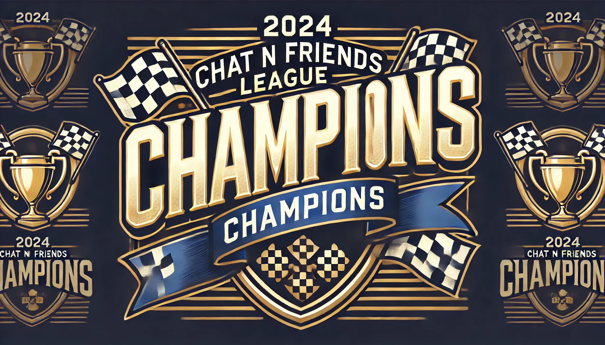

Teams
2024 Chat-N-Friends-League Champion
With the final race coming down to the last wire, the winner was ultimately awarded to KIWI CONSTRUCTS with the incredible performance from Charles Leclerc. Going into Abu Dhabi the score was 58 points apart form Verus construct and Kiwi construct with Kiwi in the lead. Although it was not to be taken lightly since Verus had an incredible 5.3M larger cap hit. The lineup for each team going into the final race became very similar but had some major differences that would affect who would be on top.

This race Verus constructs needed a huge change which was why they activated the wildcard chip that allowed them to change drivers without taking penalty points.
Verus construct was running a lineup of Lando Norris as their head driver with 2x DRS and Geogre Russell as number 2 followed up by Pierre Gasly, Nico Hulkenberg and Valtteri Bottas.
Lando Norris became the huge lead here for taking 1st place in the race itself and scoring a whooping 70p for Verus constructs.
While there where some disappointments such like Geogre Russell with only 17p for a 23.2M driver or Valtteri Bottas with -16p due to a crash that lead to a retirement,
it did go better than the last race in Qatar. With the Constructors Verus went with McLaren that scored 65p and the surprising HAAS that could have
been the wildcard to make sure Verus construct could take the lead. HAAS only managed to retrive 30p in total from Nico Hulkenberg and Kevin Magnussen.
In total Verus Construct went up +4 points from Qatar with a 192 points performance.
In the case for KIWI constructs they only made 3 changes which was switching out Charles Leclerc to Lando Norris, Liam Lawson to Pierre Gasly and Nico Hulkenberg to Zhou Guanyu.
With the 2 drivers Franco Colapinto and Valtteri Bottas it took down -36 points together with both drivers either crashing or retiring the car. With this outcome people could expect Kiwi construct to lose the 58 point lead when it immediately went to 22 point differences.
But the major factor to the victory of Kiwi construct was the Ferrari car with Charles Leclerc when he went from p18 at the start of the race to p3 taking in 16 points in positions gained and 14 points in overtakes with a total 55 points from him alone.
With this total Kiwi constructs got a final score of 203 points and took home the Chat-N-Friends-League championship.
Some of the major performance came from Kiwi constructs 310 point weekend in Austin USA with the highest total points in a single weekend and winning 14 out of the total 20 races. Verus Construct also had the honor of having the largest point jump from one weekend to another with a differences of 156 points.
Overall it was an incredible season with a close fight coming down to the very end with 3243 points to 3174 points.
by Alex Brewitz 2024-11-24